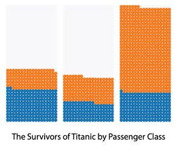
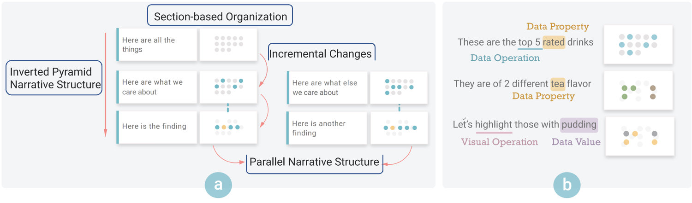

论文：DataParticles: Block-based and Language-oriented Authoring of Animated Unit Visualizations
作者：Yining Cao, Jan L.E, Zhutian Chen, and Haijun Xia
发表：CHI 2023 (Best Paper)
单元可视化已广泛用于交互式文章和视频中的数据叙述。然而，编写包含动画单元可视化的数据故事是具有挑战性的，因为在编写叙述和配置附带的可视化和动画之间来回切换是一个冗长而耗时的过程。为了简化这一过程，我们提出了DataParticles，这是一个基于块的故事编辑器，它利用文本、数据和可视化之间的潜在联系，帮助创作者灵活地构建原型、探索和迭代故事叙事及其相应的可视化。为了为DataParticles的设计提供信息，我们采访了6位领域专家，并研究了44个现有动画单元可视化的数据集，以确定他们采用的叙事模式和一致性原则。一项由9位专家参与的用户研究表明，通过鼓励探索和支持快速原型，DataParticles可以显著简化使用动画单元可视化编写数据故事的过程。
背景
动画单元可视化(Animated Unit Visualization, AUV):
单元可视化(Unit Visualization)：每个数据项都表示为唯一的视觉单元，数据和视觉元素是一对一的映射，e.g.

在此基础上形成的AUVs适合于传达数据见解，因为它们以小块的形式传递信息，能顺利地引导观众。
挑战：
目前创作数据驱动的文章/视频的工作流分散、重复，
➡️ 使用AUV的数据故事更为复杂
➡️ 需要保持文字+可视化+动画+交互在语义和时序上的一致性
相关工作
AUV创作
- 通过关键帧和静态可视化之间的插值生成➡️手工
- 通过排列数据事实来自动生成AUV➡️根据规则和模板，表达力有限
- DataParticles利用AUV的上下文推断动画
数据驱动的Storytelling
- 大部分的storytelling是基于chart的
➡️ 很少关于在storytelling中如何使用单元可视化
- 大部分的storytelling是基于chart的
使用NLI生成可视化
- 类似CrossData、Kori, 使用可视元素和更随意的自然语言之间的理想映射
基于块的内容创建
- 支持渐进式创作和即时视觉反馈, e.g., Jupter, Observable
- 两栏式的脚本创作
贡献点
- 形成性研究
- 与6位专家创建者确定使用AUV创建数据驱动故事时存在的常见工作流程和痛点；
- 内容分析
- 从44个AUVs的故事中识别叙事结构、文本和可视元素之间的映射的共同模式；
- DataParticles原型系统
- 使用文本和可视元素之间的映射，使用AUV为数据故事创建语言驱动的、基于块的创作体验；
- 专家评估
- 证实DataParticles的实用性和对未来设计原型的启示
形成性研究
创作AUVs的工作流程
- 确认数据故事的叙述逻辑；
- 根据叙述规划生成可视化和动画；
- 结合叙述和视觉元素；
可以分为两类：
- 数据驱动：从一般主题和现有数据集开始。然后，他们分析数据，收集摘录，并将摘录组织成一个连贯的故事；
- 故事驱动：创造者从书面叙述和预先确定的呈现数据的顺序开始。然后，他们搜索与他们的故事一致的数据事实，并结合可视化来提供支持证据。重点是创造一个吸引人的故事；
创作AUVs的挑战
- 🤯 设计和推进AUV原型的挑战
- auv中元素外观是否连续、设计者的决策是否满足叙述要求…
- 🤯 繁琐和复杂的创作流程
- 处理分析数据、可视化、制作动画的工具都不同
- 🤯 不停地重复故事-可视化的一致性
- 调整动画时间、可视化布局、根据新的见解改变叙述…
内容分析
数据收集：
44 data stories (Vox, the Pudding, the New York Times, the Guardian) ➡️ 403 sections
从叙述和组织结构和数据映射方式两个方面进行了总结：

DataParticles
专家评估
- 📝 Language-Oriented Authoring
- “使用自然语言来表达想法是一种更直接和自然的交流方式，特别是在故事创作的早期阶段，故事通常是由高层次的意图而不是特定的配置引导的”
- 📝 Block-based Editing – 支持
- 📝 Workflows
- 相比于拖拽会破坏叙述，专家更喜欢添加块
- 🧩 局限
- 视觉效果和动画效果有限
- 线性叙事的局限
- 受限于DataParticles提供的数据探索
讨论
- 支持完整的创作流程
- 更多low-level control
- 🌟在整个创建过程中保持各种内容组件之间的内在关系
- 2列扩展到n列 ?
- 支持可视推理
- 在构建故事时推理auv是否有意义
- auv和其他视觉元素的混合创造出更具有沉浸感和吸引力的叙述⬅️生成模型
- 除了单元可视化之外 ?
- 介于聚合可视化和粒子动画之间
- 数据和视觉元素之间更灵活的映射
✉️ zjuvis@cad.zju.edu.cn